Dermatose acantolítica transitória ou doença de Grover não é uma condição incomum, mas que necessita de alto grau de suspeição, o que a torna muitas vezes subdiagnosticada.
Geralmente se apresenta como uma doença benigna e autolimitada, apesar de adquirir caráter persistente algumas vezes.
Etiologia
Ainda desconhecida, mas alguns fatores têm sido relacionados à sua causa ou exacerbação, como sudorese, calor, stress, trauma local, e eczema, principalmente, eczema atópico. É válido salientar que alguns estudiosos apontam uma relação em pacientes com insuficiência renal e, também em pessoas com malignidade detectada, principalmente quando a quimioterapia está envolvida. Há relatos de uso de alguns medicamentos, incluindo imunoterapias, como inibidores de BRAF e Ipilimumab.
Um grande estudo retrospectivo de pacientes ambulatoriais encontrou a doença diagnosticada 4 vezes mais no inverno do que no verão e atribuiu essa diferença à pele seca. Outro estudo com pacientes internados encontrou o repouso prolongado no leito como fator de risco.
Epidemiologia
Por se tratar de uma doença frequentemente subdiagnosticada e confundida comumente com outras dermatoses, não há muitos estudos de prevalência para a doença. A proporção homem-mulher varia de 1,8-7:1 na literatura. Ocorre principalmente em homens brancos de meia idade, acima de 50 anos, apesar de haver descrições em outras raças como negros e hispânicos, e em pacientes mais jovens.
Quadro clínico
Pápulas eritematosas, muitas vezes queratósicas, que aparecem subitamente e não coalescem, em face anterior de tórax e ou parte superior do dorso. Um sintoma importante da dermatose é o prurido, que pode ser intenso. Normalmente se resolvem em algumas semanas a meses, e usualmente têm caráter recorrente, ou podem ser persistentes. Podem se apresentar lesões orais, semelhantes a aftas, durante os surtos da doença.
Ocasionalmente, podem ser vistas lesões pustulosas, vesiculares ou seguindo as linhas de Blaschko.
Diagnóstico
O diagnóstico é suspeitado pela clínica que deve ser confirmado pela histologia. A histopatologia evidenciará acantólise suprabasal focal e disqueratose, podendo ser indistinguível do histopatológico do pênfigo vulgar, Doença de Hailey-Hailey e Doença de Darier. Além disso, a biópsia pode demonstrar infiltrado dérmico predominantemente linfocitário.
Tratamento
Atividades que induzam a sudorese profusa ou calor excessivo devem ser evitadas.
Corticoides tópicos potentes podem ser efetivos em diminuir a inflamação e melhorar o prurido. Há relatos de benefícios também com uso do calcipotriol. Porém há casos que são resistentes a todas as formas terapêuticas. Novas abordagens indicam o uso de fototerapia com êxito. Uso de anti-histamínicos para aliviar o prurido.
Ensaios controlados não foram conduzidos para avaliar a eficácia de terapias sistêmicas para o manejo desta doença. Medicamentos sistêmicos que foram relatados como eficazes para doença grave ou recalcitrante na literatura incluem:
Isotretinoína (0,5-1 mg/kg a cada 24 horas por 2-12 semanas)
Acitretina (0,5 mg/kg a cada 24 horas)
Corticosteroides sistêmicos (prednisona aproximadamente 10-60 mg a cada 24 horas com redução gradual ao longo de várias semanas)
Vitamina A (50.000 U a cada 8 horas por 2 semanas)
Dupilumabe em monoterapia em doses padrão (600 mg na dose inicial e depois 300 mg a cada duas semanas) por 8-12 semanas
REFERÊNCIAS BIBLIOGRÁFICAS
1. Efficacy of Dupilumab for Treatment-Resistant Grover's Disease: A Retrospective Study. Amara S, Hawkins K, Skaggs E, Kodali N, George E, Lau M, Largen J, Navrazhina K, Lebwohl M, Guttman-Yassky E.Br J Dermatol. 2025 Jan 28:ljaf036.
2. Grover disease: review of subtypes with a focus on management options. Aldana PC, Khachemoune A.Int J Dermatol. 2020 May;59(5):543-550.
3. Grover's Disease Association with Cutaneous Keratinocyte Cancers: More than a Coincidence? Nedelcu R, Dobre A, Turcu G, Andrei R, Balasescu E, Pantelimon F, David-Niculescu M, Dobritoiu A, Radu R, Zaharia GR, Hulea I, Brinzea A, Manea L, Gherghiceanu M, Ion D.Int J Mol Sci. 2024 Sep 8;25(17):9713.
4. Grover's Disease in a Kidney Transplant Recipient. Kirincich J, Lončarić D, Bukvić Mokos Z, Bašić-Jukić N.Acta Dermatovenerol Croat. 2019 Sep;27(3):192-194.
5. Case of Bullous Grover Disease. Li YM, Milikowski C, Galimberti F.Am J Dermatopathol. 2021 Feb 1;43(2):141-143.
Atlas de imagens 11

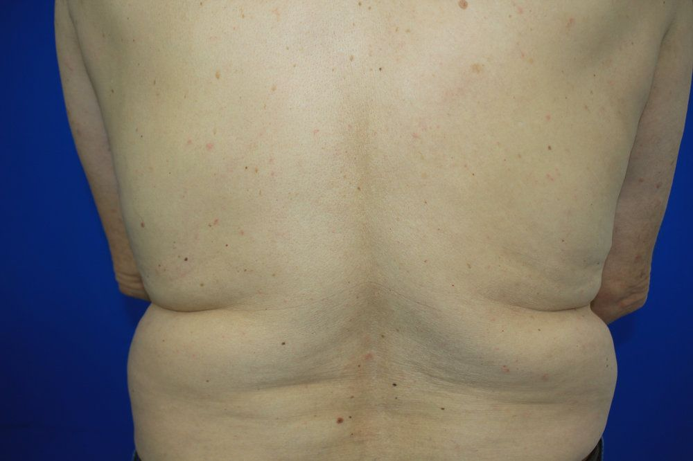

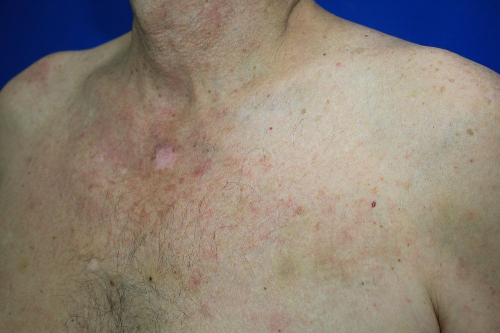

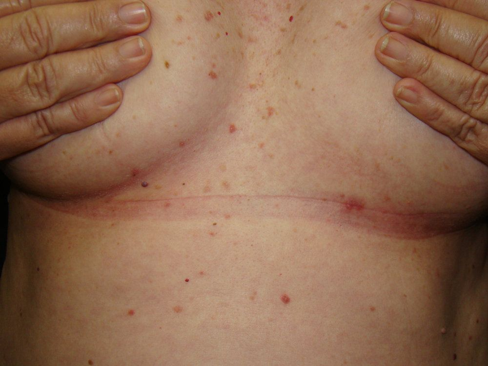

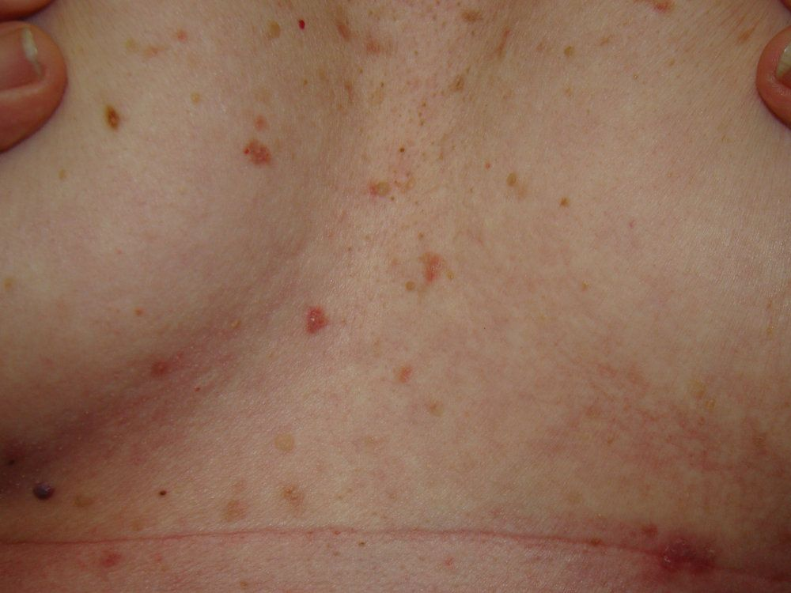

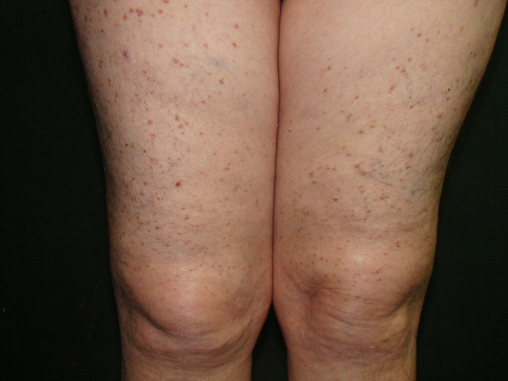

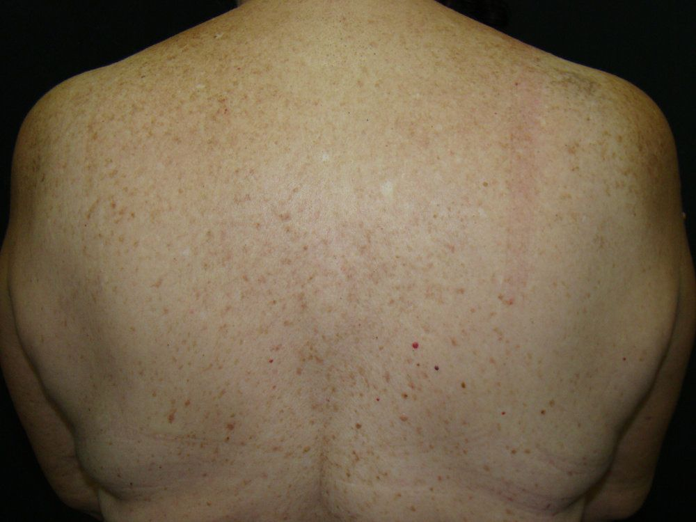

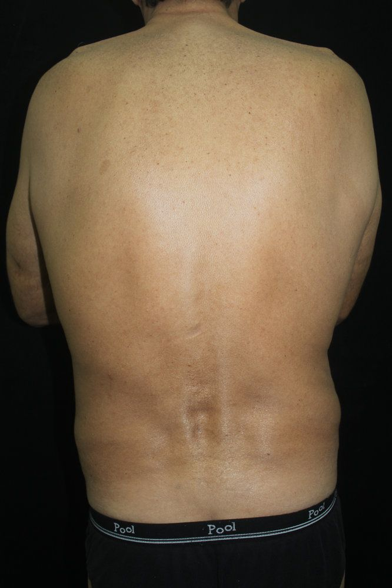

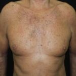

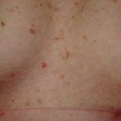

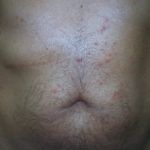

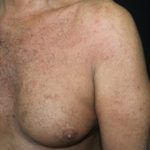
Na Skin Prime
Como podemos ajudar
Entre os recursos citados para Doença de Grover, estes estão disponíveis na clínica:
Tratamentos
Diagnóstico